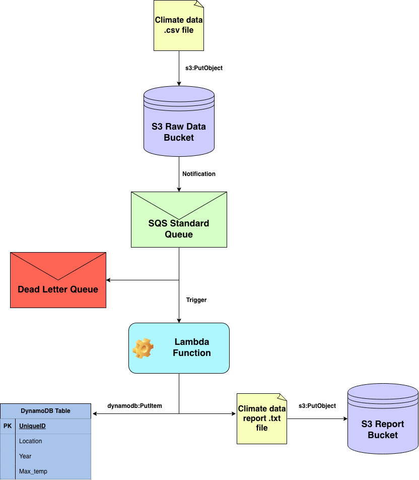
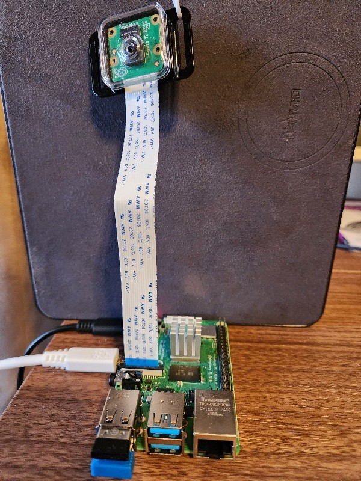
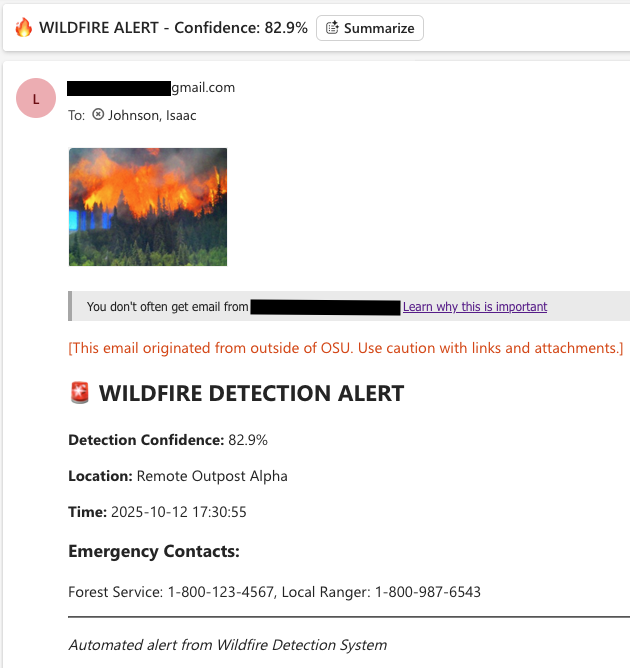
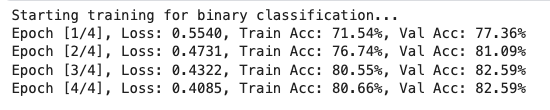
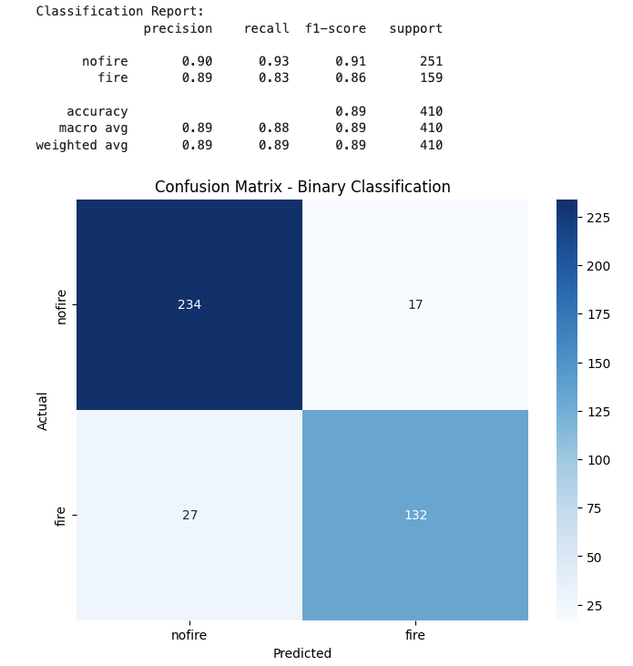

Isaac Johnson — engineer bringing experience in aerospace, software development, and AWS cloud operations.
AEROSPACE SYSTEMS
High-reliability software architecture, embedded controls, flight dynamics simulations, and mission-critical system design.
AWS CLOUD OPS
Serverless infrastructure, AWS Lambda orchestrations, IAM security policies, Terraform IaC, and cloud performance optimization.
COMPUTER VISION
Edge vision pipelines, visual object detection, image classification models, and real-time spatial processing algorithms.
// QUICK NAV MODULES
Climate Analysis Lambda Function
AWS Cloud / Serverless Data Pipeline
Computer Vision Showcase
Image Analytics & Neural Grids
Climate Analysis Lambda Function
// SYSTEM DESCRIPTION & SPECIFICATIONS
This application uses S3 to store CSV files with NOAA climate data. Updloading files to the bucket triggers an SQS queue that operates the Lambda function to process the data in the CSV file and generate a .txt file report, stored in S3, and metadata, stored in DynamoDB.
Key features include parallel compute execution for high-frequency environmental telemetry, automated metric calculation, and low-latency storage formatting for downstream data visualizations.

Raspberry Pi Computer Vision System
// PROJECT OVERVIEW & METRICS
This project is a wildfire detection system that runs on a Raspberry Pi, analyzes photos taken with the Pi Camera using a computer vision model, and sends the user an alert email if the a fire is detected in a photo.
// INSPECTION SAMPLES & CAPTIONS (VERTICAL FLOW)

Here is the setup of the Raspberry Pi 4 and Pi Camera Module 2

The program will run and take a photo every 30 seconds, sending an alert email if the confidence level is above the threshold. If the program sends an alert email, it will trigger a cool down period of 5 minutes between email alerts to prevent the recipient email adress spam control from kicking in. The email alert includes the photo that triggered the alert, as seen in the example below:

The model was trained on the dataset found here https://www.kaggle.com/datasets/elmadafri/the-wildfire-dataset

The training program is found on the Jupyter Notebook in the repo and trained on Kaggle using GPU T4 x 2 for 4 epochs